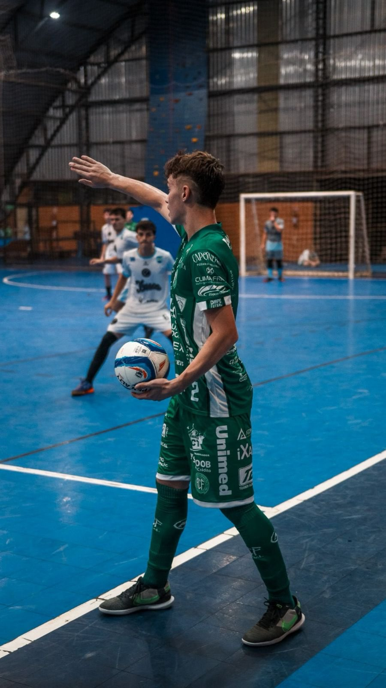
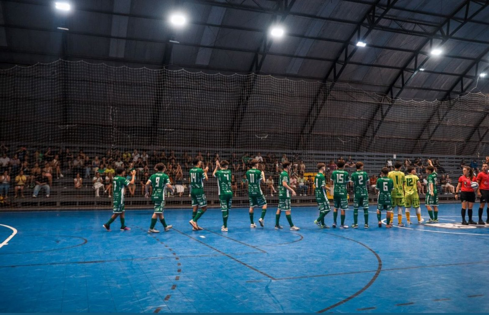

Uma partida entre duas equipes que lutam pelo topo da tabela de classificação agita a noite deste domingo (28/6) na Capital do Oeste. A Prefeitura de Chapecó/Chapecoense/Unochapecó encara o Jaraguá, no Ginásio Plínio Arlindo De Nes (SER Aurora), pelo Campeonato Catarinense Sub-17 de Futsal.

O duelo em Chapecó é atrasado da sexta rodada da primeira fase. O Verdão das Quadras soma 13 pontos em 6 jogos, em segundo lugar. O adversário lidera com 16 pontos, também em 6 partidas. A competição é disputada por sete clubes. Após turno e returno, os quatro melhores avançam à semifinal.

A entrada para acompanhar o jogo é gratuita. Entretanto, a torcida pode levar uma peça de agasalho ou cobertor. As doações serão repassadas à Fundação Aury Luiz Bodanese.
Crédito das fotos: @rogersilva_fotografia/@achapefutsal